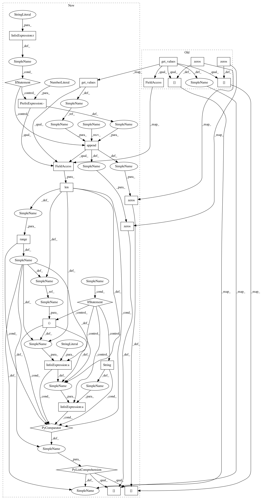

fc4917ae8a7320fc9a258b50d82a177ed2124a91,category_encoders/backward_difference.py,BackwardDifferenceEncoder,fit_backward_difference_coding,#,216
Before Change
if len(values) < 2:
return pd.DataFrame()
backwards_difference_matrix = Diff().code_without_intercept(values.get_values())
df = pd.DataFrame(data=backwards_difference_matrix.matrix, columns=backwards_difference_matrix.column_suffixes)
df.index += 1
if handle_unknown == "return_nan":
df.loc[-1] = np.nan
elif handle_unknown == "value":
df.loc[-1] = np.zeros(len(values) - 1)
if handle_missing == "return_nan":
df.loc[values.loc[np.nan]] = np.nan
elif handle_missing == "value":
df.loc[-2] = np.zeros(len(values) - 1)
return df
@staticmethod
After Change
if handle_missing == "value":
values = values[values > 0]
values_to_encode = values.get_values()
if len(values) < 2:
return pd.DataFrame(index=values_to_encode)
if handle_unknown == "indicator":
values_to_encode = np.append(values_to_encode, -1)
backwards_difference_matrix = Diff().code_without_intercept(values_to_encode)
df = pd.DataFrame(data=backwards_difference_matrix.matrix, index=values_to_encode,
columns=[str(col) + "_%d" % (i, ) for i in range(len(backwards_difference_matrix.column_suffixes))])
if handle_unknown == "return_nan":
df.loc[-1] = np.nan
elif handle_unknown == "value":
df.loc[-1] = np.zeros(len(values_to_encode) - 1)
if handle_missing == "return_nan":
df.loc[values.loc[np.nan]] = np.nan
elif handle_missing == "value":
df.loc[-2] = np.zeros(len(values_to_encode) - 1)
return df
@staticmethod
In pattern: SUPERPATTERN
Frequency: 3
Non-data size: 25
Instances
Project Name: scikit-learn-contrib/categorical-encoding
Commit Name: fc4917ae8a7320fc9a258b50d82a177ed2124a91
Time: 2018-12-21
Author: jcastaldo08@gmail.com
File Name: category_encoders/backward_difference.py
Class Name: BackwardDifferenceEncoder
Method Name: fit_backward_difference_coding
Project Name: scikit-learn-contrib/categorical-encoding
Commit Name: 4e1bb8d51e8b01c22cf52a0a5a8d7466083dd2da
Time: 2018-12-21
Author: jcastaldo08@gmail.com
File Name: category_encoders/polynomial.py
Class Name: PolynomialEncoder
Method Name: fit_polynomial_coding
Project Name: scikit-learn-contrib/categorical-encoding
Commit Name: bdc3fe70d33b85cfdaa5ed02ccfd60807ae4f1da
Time: 2018-12-21
Author: jcastaldo08@gmail.com
File Name: category_encoders/helmert.py
Class Name: HelmertEncoder
Method Name: fit_helmert_coding